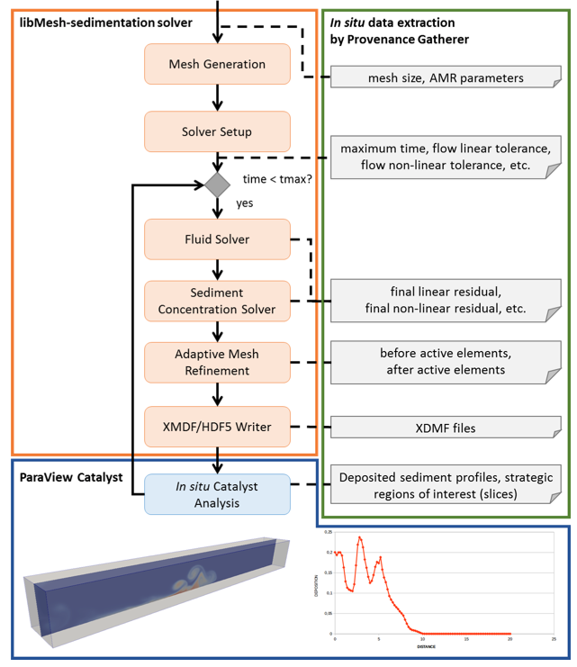
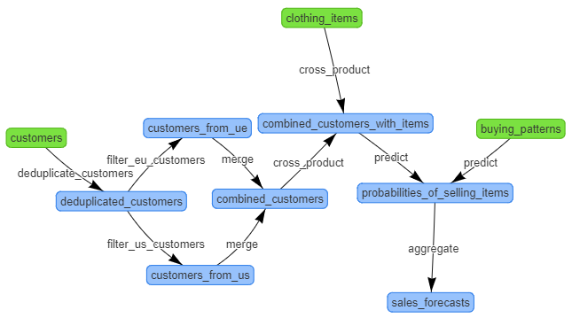

Home >> Applications
ApplicationsParallel adaptive mesh refinement and coarsening (AMR) are optimal strategies for tackling large-scale sedimentation simulations. libMesh is an open-source finite-element library that supports parallel AMR and has been used in several multiphysics applications. As an application built upon the libMesh library, libMesh-sedimentation simulates turbidity currents typically found in geological processes. Considering this computer simulation, we coupled libMesh-sedimentation to the DfAnalyzer tool and ParaView Catalyst to manage provenance data and to analyze raw data in situ. Figure 3 presents an overview of this approach and more information can be found in our Supercomputing poster.

Figure 3. libMesh-sedimentation coupled to DfAnalyzer tool and ParaView Catalyst
A Spark application was modeled for determining which products a mail-order clothing company will have the largest demands among its customers. More specifically, DfAnalyzer components are being used to support a simple interactive decision system, named SalesForecasts, in presenting relevant information to the final decision maker. SalesForecasts predicts the sales of each clothing item based on an input dataset. Furthermore, we developed a dataset generator that enables us to increase the complexity of data manipulated by this application. This application motivated us to publish a demonstration paper at VLDB conference 2018. More details about this demonstration can be found in our git repository with a Spark application using DfAnalyzer.

Figure 1. Spark application - SalesForecasts